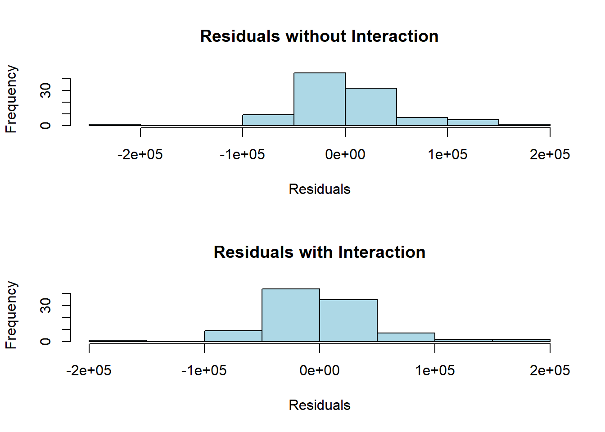

A. Predicted selling price: 107296
Residual: 37704
Given the variable information above (y=selling price, x1=house size, x2=lot size) and the data in the prediction equation (1,240 sqft house on an 18,000 sqft lot), the home’s estimated selling price is $107,296. Now compute the difference between this and the actual selling price ($145,000).
The difference in pricing indicates that the house sold for $37,740 more than the projected selling price.
B
home_size_coefficient <-53.8cat("B. House selling price predicted to increase for each square-foot increase in home size:", home_size_coefficient, "\n")
B. House selling price predicted to increase for each square-foot increase in home size: 53.8
C
home_size_increase <-1lot_size_coefficient <-2.84lot_size_increase <- (home_size_coefficient * home_size_increase) / lot_size_coefficientcat("C. Lot size increase needed to have the same impact as a one-square-foot increase in home size:", lot_size_increase, "\n")
C. Lot size increase needed to have the same impact as a one-square-foot increase in home size: 18.94366
Question 2
A
library(alr4)data(salary)t_test <-t.test(salary ~ sex, data = salary)t_test
Welch Two Sample t-test
data: salary by sex
t = 1.7744, df = 21.591, p-value = 0.09009
alternative hypothesis: true difference in means between group Male and group Female is not equal to 0
95 percent confidence interval:
-567.8539 7247.1471
sample estimates:
mean in group Male mean in group Female
24696.79 21357.14
Without regard to school level or work rank, the average male pay is $24,696.79, while the average female wage is $21,357.14 - a $3,339.65 difference.
B
model <-lm(salary ~ ., data = salary)conf_int <-confint(model, level =0.95)conf_int
The pay gap between men and women is between -697.82 and 3030.57, according to a multiple linear regression with a 95% confidence range.
C
summary(model)
Call:
lm(formula = salary ~ ., data = salary)
Residuals:
Min 1Q Median 3Q Max
-4045.2 -1094.7 -361.5 813.2 9193.1
Coefficients:
Estimate Std. Error t value Pr(>|t|)
(Intercept) 15746.05 800.18 19.678 < 2e-16 ***
degreePhD 1388.61 1018.75 1.363 0.180
rankAssoc 5292.36 1145.40 4.621 3.22e-05 ***
rankProf 11118.76 1351.77 8.225 1.62e-10 ***
sexFemale 1166.37 925.57 1.260 0.214
year 476.31 94.91 5.018 8.65e-06 ***
ysdeg -124.57 77.49 -1.608 0.115
---
Signif. codes: 0 '***' 0.001 '**' 0.01 '*' 0.05 '.' 0.1 ' ' 1
Residual standard error: 2398 on 45 degrees of freedom
Multiple R-squared: 0.855, Adjusted R-squared: 0.8357
F-statistic: 44.24 on 6 and 45 DF, p-value: < 2.2e-16
To summarize, wage increases are $1388.61 if the person has a PhD, $5292.36 if the person is an Associate Professor, $11,118.75 if the person is a full/tenured Professor, $1,166.37 if the individual is female, $476.31 for each year the individual remains at their present rank.
Salary, on the other hand, drops by $124.57 for each year after the individual obtained their maximum degree/rank level. Except for this one, all slopes are positive. Furthermore, an individual’s rank and the number of years spent at their present rank are statistically significant (less than 0.05).
D
# Change the baseline category for rank and rerun the modelsalary$rank <-relevel(salary$rank, ref ="Asst")model2 <-lm(salary ~ ., data = salary)summary(model2)
Call:
lm(formula = salary ~ ., data = salary)
Residuals:
Min 1Q Median 3Q Max
-4045.2 -1094.7 -361.5 813.2 9193.1
Coefficients:
Estimate Std. Error t value Pr(>|t|)
(Intercept) 15746.05 800.18 19.678 < 2e-16 ***
degreePhD 1388.61 1018.75 1.363 0.180
rankAssoc 5292.36 1145.40 4.621 3.22e-05 ***
rankProf 11118.76 1351.77 8.225 1.62e-10 ***
sexFemale 1166.37 925.57 1.260 0.214
year 476.31 94.91 5.018 8.65e-06 ***
ysdeg -124.57 77.49 -1.608 0.115
---
Signif. codes: 0 '***' 0.001 '**' 0.01 '*' 0.05 '.' 0.1 ' ' 1
Residual standard error: 2398 on 45 degrees of freedom
Multiple R-squared: 0.855, Adjusted R-squared: 0.8357
F-statistic: 44.24 on 6 and 45 DF, p-value: < 2.2e-16
None of the figured have changed.
E
# Exclude the rank variable and rerun the modelmodel3 <-lm(salary ~ degree + sex + year + ysdeg, data = salary)summary(model3)
Call:
lm(formula = salary ~ degree + sex + year + ysdeg, data = salary)
Residuals:
Min 1Q Median 3Q Max
-8146.9 -2186.9 -491.5 2279.1 11186.6
Coefficients:
Estimate Std. Error t value Pr(>|t|)
(Intercept) 17183.57 1147.94 14.969 < 2e-16 ***
degreePhD -3299.35 1302.52 -2.533 0.014704 *
sexFemale -1286.54 1313.09 -0.980 0.332209
year 351.97 142.48 2.470 0.017185 *
ysdeg 339.40 80.62 4.210 0.000114 ***
---
Signif. codes: 0 '***' 0.001 '**' 0.01 '*' 0.05 '.' 0.1 ' ' 1
Residual standard error: 3744 on 47 degrees of freedom
Multiple R-squared: 0.6312, Adjusted R-squared: 0.5998
F-statistic: 20.11 on 4 and 47 DF, p-value: 1.048e-09
Salary reduces by: when variable ‘rank’ is deleted: $3299.35 if the person holds a PhD, $1,286.54 if the person is female Salary gains, however, are $351.97 for each year spent at their present level, $339.40 for each year after earning their highest degree.
The slopes are divided 50/50 in terms of how many are positive and how many are negative. ‘degreePhD’, ‘year’, and ‘ysdeg’ are all statistically significant (less than 0.05), but’sexFemale’ is not.
F
# Create a new variable and run the multiple regression modelsalary$new_dean <-ifelse(salary$ysdeg <=15, "New", "Old")model4 <-lm(salary ~ degree + sex + new_dean + year*ysdeg, data = salary)summary(model4)
Call:
lm(formula = salary ~ degree + sex + new_dean + year * ysdeg,
data = salary)
Residuals:
Min 1Q Median 3Q Max
-8396.1 -2171.9 -352.5 2053.3 11061.3
Coefficients:
Estimate Std. Error t value Pr(>|t|)
(Intercept) 16855.764 1508.902 11.171 1.45e-14 ***
degreePhD -3205.140 1431.791 -2.239 0.0302 *
sexFemale -1222.794 1345.288 -0.909 0.3682
new_deanOld 550.409 2119.912 0.260 0.7963
year 462.292 277.040 1.669 0.1021
ysdeg 332.120 141.753 2.343 0.0236 *
year:ysdeg -4.525 10.083 -0.449 0.6557
---
Signif. codes: 0 '***' 0.001 '**' 0.01 '*' 0.05 '.' 0.1 ' ' 1
Residual standard error: 3814 on 45 degrees of freedom
Multiple R-squared: 0.6334, Adjusted R-squared: 0.5845
F-statistic: 12.96 on 6 and 45 DF, p-value: 1.902e-08
‘Year’ and ‘ysdeg’ are likely to be highly correlated.
Question 3
A
library(smss)data(house.selling.price)model <-lm(Price ~ Size + New, data = house.selling.price)summary(model)
Call:
lm(formula = Price ~ Size + New, data = house.selling.price)
Residuals:
Min 1Q Median 3Q Max
-205102 -34374 -5778 18929 163866
Coefficients:
Estimate Std. Error t value Pr(>|t|)
(Intercept) -40230.867 14696.140 -2.738 0.00737 **
Size 116.132 8.795 13.204 < 2e-16 ***
New 57736.283 18653.041 3.095 0.00257 **
---
Signif. codes: 0 '***' 0.001 '**' 0.01 '*' 0.05 '.' 0.1 ' ' 1
Residual standard error: 53880 on 97 degrees of freedom
Multiple R-squared: 0.7226, Adjusted R-squared: 0.7169
F-statistic: 126.3 on 2 and 97 DF, p-value: < 2.2e-16
While controlling for size, predictor variables ‘New’ and ‘Size’ have p-values of 0.00257 and 2e-16 respectively. Both p-values are statistically significant as they are less than 0.05. This indicates that the null hypothesis can be rejected (there is no relationship between ‘New’ and ‘Price’ OR between ‘Size’ and ‘Price’ of new homes). By calculating the correlation, we can see that the correlation between ‘New’ and ‘Size’ is 0.3843, which is a wear relationship.
B
coefficients <-coef(model)coefficients
(Intercept) Size New
-40230.8668 116.1316 57736.2828
The variables in the scatterplot have a linear/correlative connection, as seen in the graph, demonstrating that as size grows, so does the price. However, based on the colors of the dots (which correlate to the age of the home), the link isn’t as simple. New houses (light blue dots) are distributed across the graph, mostly along the slope line. The older residences (dots that aren’t light blue) are primarily clustered towards the bottom right corner of the graph, although there are a handful that outperform the price/size of brand new houses.
The predicted selling price for a New home with the above measurements is $398,307.50.
The predicted selling price for a not-new home with the above measurements is $291,087.40.
G
# Calculate the predicted selling price for a home of 1500 square feetsize_1500 <-1500predicted_new_1500 <- coefficients_interaction[1] + coefficients_interaction[2] * size_1500 + coefficients_interaction[3] * new + coefficients_interaction[4] * size_1500 * newpredicted_not_new_1500 <- coefficients_interaction[1] + coefficients_interaction[2] * size_1500 + coefficients_interaction[3] * not_new + coefficients_interaction[4] * size_1500 * not_newpredicted_new_1500
(Intercept)
148776.1
predicted_not_new_1500
(Intercept)
134429.8
The predicted selling price of a new 1500sqft home is $148,776.10
The predicted selling price of a 1500sqft home that ISN’T new is $134,429.80
In comparison to the data in Part F (where the property size is doubled to 3000sqft), the expected selling prices in this section (G) are significantly lower. A new 3000sqft house is expected to sell for $398,307.50, while a new 1500sqft house is expected to sell for $148,694.70. The size and price both reduced by half, demonstrating that these two variables are connected and have a linear connection. A 3000sqft house that is NOT new is expected to sell for $291,087.40. A 1500sqft house that is not brand new is expected to sell for $134,429.80. The price difference between the two is $156,657.6. The price is more directly proportional to size than it is with new dwellings.
H
# Compare the adjusted R-squared valuessummary(model)$adj.r.squared
[1] 0.7168767
summary(model_interaction)$adj.r.squared
[1] 0.7363181
# Compare residuals' distributionpar(mfrow =c(2, 1))hist(residuals(model), main ="Residuals without Interaction", xlab ="Residuals", col ="lightblue")hist(residuals(model_interaction), main ="Residuals with Interaction", xlab ="Residuals", col ="lightblue")

I believe that a model with no interaction better describes the relationship between ‘Size’ and ‘New’ with the outcome price; the model with interaction best represents the relationship between ‘Size’ and ‘Price’ rather than ‘Size’ and ‘New’.